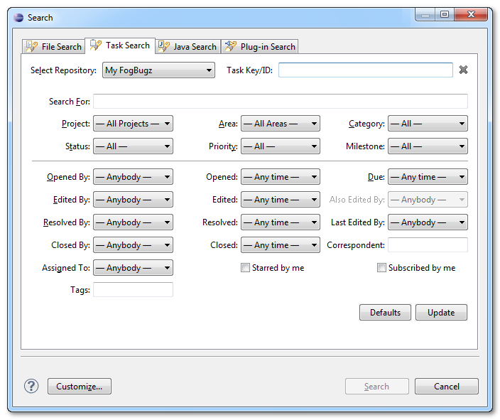
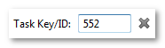
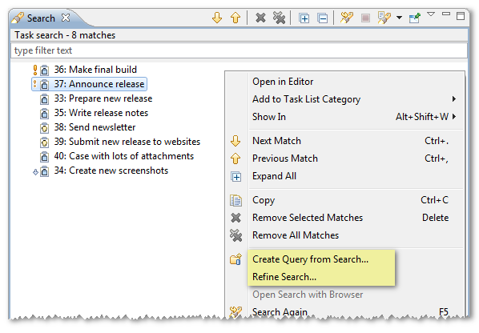

Searching FogBugz Cases
Foglyn allows you to search for your FogBugz cases from Search Dialog. Foglyn uses advanced search capabilities of FogBugz, but if you are not familiar with it, don’t worry. Foglyn provides simplified user interface for this functionality.
Task Search dialog is available from Search > Search ... menu by selecting Task Search tab (keyboard shortcut: Ctrl+Shift+F12. Select your FogBugz repository from available repositories.

Cannot see Task Search tab? You might need to enable it via Customize ... button at the bottom of Search dialog.
To search for single FogBugz case, simply enter case number into Task Key/ID field and press Search:

Other fields are used to create more complex search criteria. All selected conditions must be met for case to appear in search results. If you select both Opened By and Opened [Date], only cases which were opened by given person on given date are matched. Same holds for Edited By plus Edited, Resolved By plus Resolved and Closed By plus Closed fields. Also Edited By is available only when you select person in Edited By field. If you want to search by Area or Milestone, you need to choose some Project first.
Defaults button resets all fields to their default values. This is often useful right after opening search dialog, since Foglyn remembers previous values, and automatically fills all fields with values from the last search. Update button can be used to fetch latest metadata from FogBugz server.
After you select Search button, Foglyn will perform the search, and matching cases will be displayed in the Search view. You can refine your search or create new query for Task List by selecting the corresponding menu item from context menu.

Related Topics: